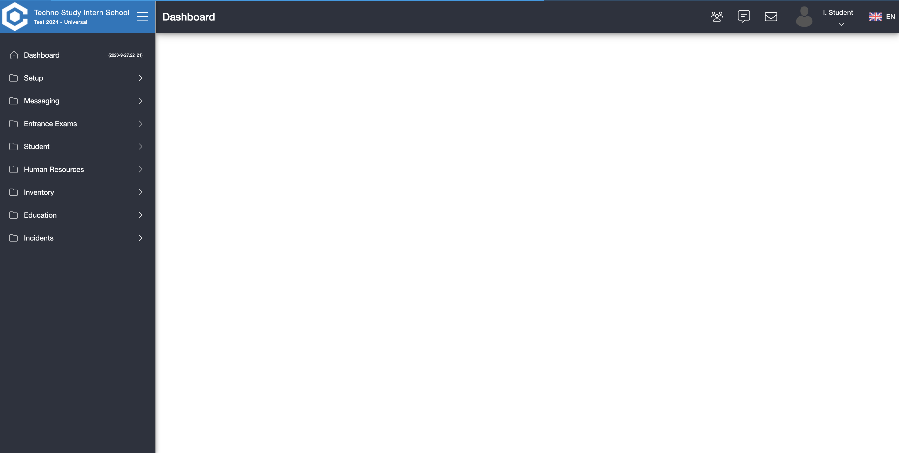

-
Login Function
7:25:59 PM / 00:01:17:346 Fail
Login Function
09.27.2023 7:25:59 PM 09.27.2023 7:27:17 PM 00:01:17:346 · #test-id=1As a user I want to be able to login with my valid username and passwordFailLogin with valid username and passwordGiven Navigate to Campus Web SiteAnd Enter username and passwordWhen Click on Login ButtonThen User should login successfullyStepDefinitions.Hooks.afterScenario(io.cucumber.java.Scenario)Login with valid username and password -
Country Function
7:27:17 PM / 00:01:37:013 Fail
Country Function
09.27.2023 7:27:17 PM 09.27.2023 7:28:54 PM 00:01:37:013 · #test-id=9As a user I want to be able to create, update and delete different countries so I can add students from different countriesFailCreate country with parametersGiven Navigate to Campus Web SiteAnd Enter username and passwordAnd Click on Login ButtonAnd Navigate to Country pageAnd Click on add ButtonStep skippedAnd Enter "Batch 9" as country name and "BT9" as country codeStep skippedWhen Click on save buttonStep skippedThen Success message should be displayedStep skippedStepDefinitions.Hooks.afterScenario(io.cucumber.java.Scenario)Create country with parametersFailDelete country with parametersGiven Navigate to Campus Web SiteAnd Enter username and passwordAnd Click on Login ButtonAnd Navigate to Country pageAnd Search for "Batch 9" as country nameStep skippedAnd Click on delete buttonStep skippedWhen Click on delete confirm buttonStep skippedThen Success message should be displayedStep skippedStepDefinitions.Hooks.afterScenario(io.cucumber.java.Scenario)Delete country with parameters -
Fees Function
7:28:54 PM / 00:01:39:819 Fail
Fees Function
09.27.2023 7:28:54 PM 09.27.2023 7:30:33 PM 00:01:39:819 · #test-id=32FailAdd a FeeGiven Navigate to Campus Web SiteAnd Enter username and passwordAnd Click on Login ButtonAnd Navigate to Fees PageAnd Click on add ButtonStep skippedAnd Fill the formBatch 9 Fee BT9 BT9Fee 754 Step skippedWhen Click on Save and Exit ButtonStep skippedThen Success message should be displayedStep skippedStepDefinitions.Hooks.afterScenario(io.cucumber.java.Scenario)Add a FeeFailDelete FeeGiven Navigate to Campus Web SiteAnd Enter username and passwordAnd Click on Login ButtonAnd Navigate to Fees PageAnd Search for the fee nameBatch 9 Fee BT9 754 Step skippedAnd Click on delete buttonStep skippedWhen Click on delete confirm buttonStep skippedThen Success message should be displayedStep skippedStepDefinitions.Hooks.afterScenario(io.cucumber.java.Scenario)Delete Fee
-
org.openqa.selenium.TimeoutException
5 tests
org.openqa.selenium.TimeoutException
5 failedStatus Timestamp TestName Fail 19:26:55 PM Then User should login successfully Login Function.Login with valid username and password.Then User should login successfullyFail 19:27:45 PM And Navigate to Country page Country Function.Create country with parameters.And Navigate to Country pageFail 19:28:35 PM And Navigate to Country page Country Function.Delete country with parameters.And Navigate to Country pageFail 19:29:23 PM And Navigate to Fees Page Fees Function.Add a Fee.And Navigate to Fees PageFail 19:30:13 PM And Navigate to Fees Page Fees Function.Delete Fee.And Navigate to Fees Page
-
@SmokeTest
5 tests
@SmokeTest
5 failedStatus Timestamp TestName Fail 19:25:59 PM Login with valid username and password Login Function.Login with valid username and passwordFail 19:27:17 PM Create country with parameters Country Function.Create country with parametersFail 19:28:06 PM Delete country with parameters Country Function.Delete country with parametersFail 19:28:54 PM Add a Fee Fees Function.Add a FeeFail 19:29:44 PM Delete Fee Fees Function.Delete Fee -
@FireTest
4 tests
@FireTest
4 failedStatus Timestamp TestName Fail 19:25:59 PM Login with valid username and password Login Function.Login with valid username and passwordFail 19:27:17 PM Create country with parameters Country Function.Create country with parametersFail 19:28:06 PM Delete country with parameters Country Function.Delete country with parametersFail 19:28:54 PM Add a Fee Fees Function.Add a Fee
Started
Sep 27, 2023 07:25:58 PM
Ended
Sep 27, 2023 07:30:34 PM
Features Passed
0
Features Failed
3
Features
Scenarios
Steps
Timeline
Tags
| Name | Passed | Failed | Skipped | Others | Passed % |
|---|---|---|---|---|---|
| @SmokeTest | 0 | 5 | 0 | 0 | 0% |
| @FireTest | 0 | 4 | 0 | 0 | 0% |